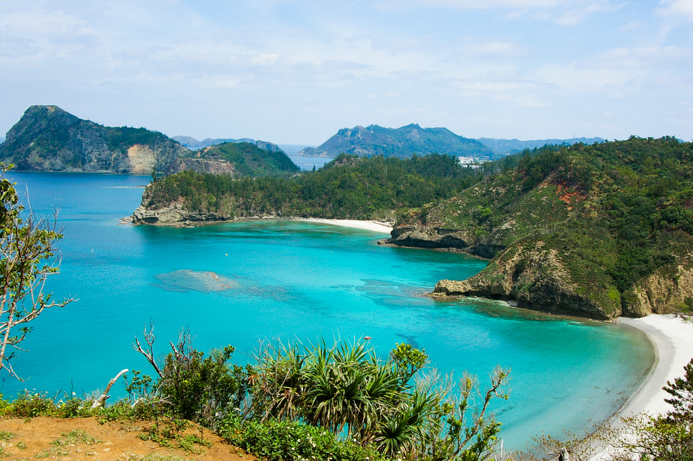
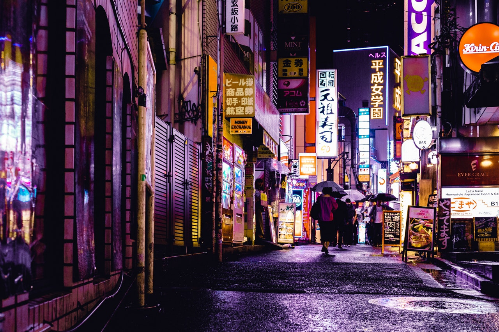
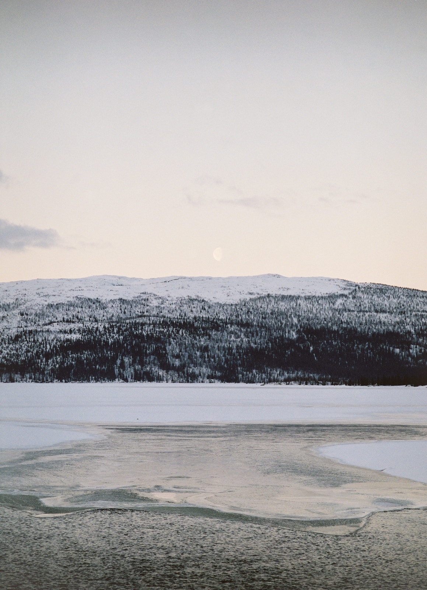

When you think of Japan, you'll probably picture the central island of Honshu. It is considered to be the main region of Japan, and is home to neon streets, famous temples, geisha districts, and the Japanese Alps. From the snow monsters in Tohoku to the glittering streets of Tokyo, the island of Honshu has something to offer to everyone.
Traditionally, Honshu is split into 5 regions: Tohoku in the north,Kansai in the south, Kanto in the east, Chugoku in the west and Chubu in the center, and thanks to the convenience of Japan's effient rail system, travellers are able to go between each of them with little to no effort.
Central Honshu is most known for the "Golden Route", consisting of the cities of Tokyo, Osaka, and Kyoto, however the region is also home to the Japan Alps, located near the border of Gifu and Nagano Prefectures. The Kansai Region is Japan's spiritual and cultural capital, shaped by towering castles, traditional Japanese gardens, and arduous journeys to enlightenment.
The Kanto region is anchored by the world's biggest metropolitan city, Toyko, however subtropical islands and mountain getaways can also be found within the region. Allow time to discover Kanto's hot spring resorts, unspoiled mountain gorges, pristine beaches, and the UNESCO World Heritage city of Nikko. The diverse port city of Yokohama and the immersive nature of Gunma, Saitama and Ibaraki are right on Tokyo's doorstep. The volcanic Ogasawara Islands offer a subtropical getaway with endemic wildlife and clear water. Kanto's culinary options are as varied as the landscape—restaurants serving cuisine from every corner of the globe abound at every price point.
Stretching out above central Honshu is Tohoko, Japan's northeastern wilderness. Encompassing six rural prefectures, Miyagi, Yamagata, Iwate, Fukushima, Akita and Aomori, Tohoko is bound together by custom, heritage and recent tragedy. The devastating earthquake and tsunami that struck in 2011 brought out the resilient nature of Tohoku's people, and local passion and pride are putting the area back on its feet. There's a lot to be proud of—dramatic landscapes, history-rich sites, craft sake and a host of outdoor activities like rafting, hiking and skiing. Much more rural than Tokyo yet more developed than Hokkaido, the Tohoku region makes for exciting excursions from the capital and memorable side trips on the journey to Japan's most northern island. If travelling in summer, don't miss the explosive sound, color and drama of the Aomori Nebuta Festival. Otherise, there are plenty of temples and gardens to be discovered, including World Heritage-listed Hiraizumi in Iwate.
To the west lies the less-traveled Chugoku region, which is full of rural beauty, rewarding hikes and great historical significance. It is hard to overlook the well-known Hiroshima, but this destination is merely a starting point to Japan's western frontier. Continue west on the Sanyo Shinkansen and discover countless idyllic seaside towns. Visit the Seto Inland Sea, which has onward paths to the islands of Kyushu and Shikoku. Venture inland to the towns that are overlooked by foreigners, and be rewarded with hikes on breathaking peaks like Mt. Daisen, and experience true rural Japan in Shimane and Tottori.

Top Picks
See All >
If travelling in summer, don't miss the explosive sound, color and drama of the Aomori Nebuta Festival. Travelling along the rugged Sea of Japan coast has also been made possible thanks to the development of the newest bullet train line. Snow monsters can be found in the north in towns like Yamagata, and Tokamachi’s colorful rice terraces are a true view to behold.
Getting There
By plane
The major airports are Narita Airport (NRT) and Haneda Airport (HND) near Tokyo and Kansai Airport (KIX) and Osaka International Airport (ITM) near Osaka and Kyoto. The latter is a major domestic airport. Other airports offering international connections are Nagoya's Chubu Centrair International Airport (NGO) and Hiroshima Airport (HIJ). Japan Airlines (JAL) and All Nippon Airways (ANA) have extensive services, as well as dozens of international airlines.
By train
Japan's famous bullet trains (shinkansen) are able to get you virtually anywhere within Japan with impressive speed. If you are coming into to Honshu from other islands in Japan, they are able to take you from the far north in Hokkaido and south and southwest in Shikoku and Kyushu respectively.